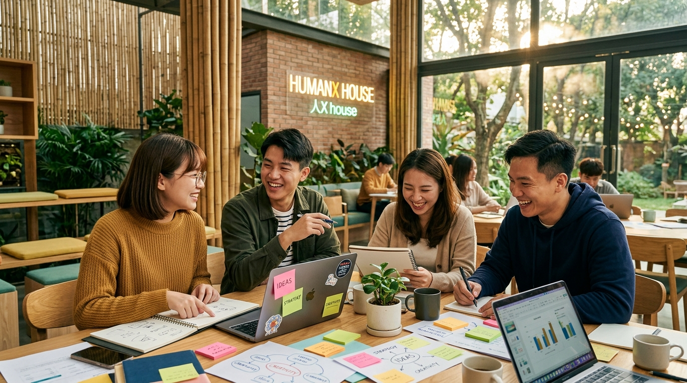
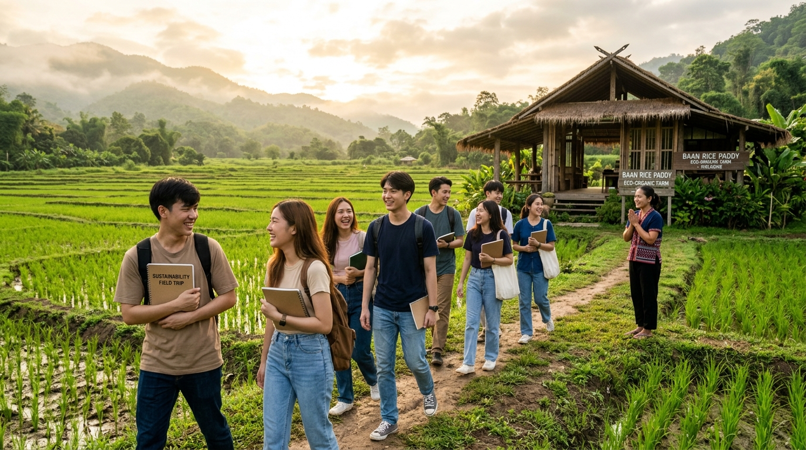
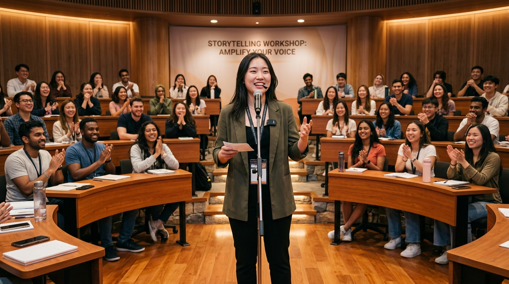
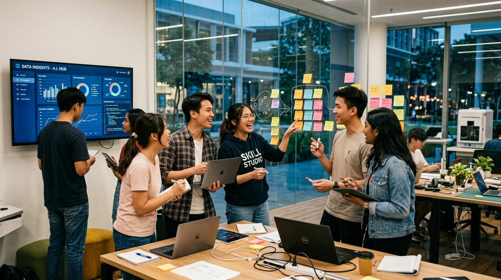
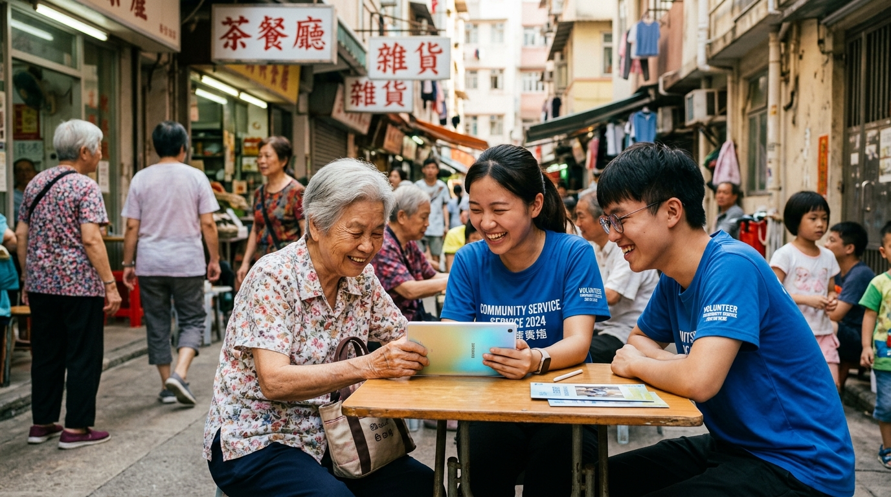
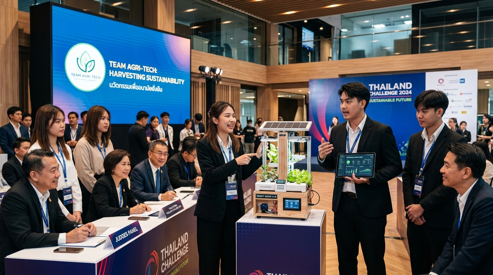

เส้นทางการเรียนรู้ 6 ช่วงการเติบโต (6 Stages Learning Journey)
บ่มเพาะนิสิตต้นแบบ 50 คน (10 ทีมบ้าน) ในบรรยากาศการเรียนรู้อบอุ่นแบบ HumanX House ผ่าน 4 Skill Studios การศึกษาดูงาน School Tours 4 แห่ง ค่ายสำรวจภาคสนาม และการลงมือแก้โจทย์จริงระดับประเทศผ่าน Thailand Challenge


ศึกษาดูงานโจทย์ "กว่าจะมาเป็นศาลานา" เรียนรู้ปัจจัยความสำเร็จและวิถีเกษตรอินทรีย์ยั่งยืน
สร้างความรู้สึกเป็นสมาชิกของชุมชนแห่งการเติบโต "ที่นี่เป็นพื้นที่ปลอดภัยที่ฉันสามารถทดลอง ผิดพลาด และเติบโตได้" บ่มเพาะความผูกพันและตั้งเป้าหมายชีวิตร่วมกัน
แนะนำ 6 Stages กรอบทักษะ และแนวทางประเมินผล
ทำความรู้จักผ่านจุดแข็ง ประสบการณ์ และประเด็นสังคม
แบ่ง 50 คนเป็น 10 ทีม คละคณะ ชั้นปี และความสนใจ
ร่วมตั้งข้อตกลง บทบาท การสื่อสาร และการตัดสินใจ
มอบสมุดสะสม Stamp ทักษะ + วาดภาพ My Future Self
เลือกทักษะเป้าหมาย 2-3 ด้าน กำหนดเป็นภารกิจของตนเอง
ฟังการบรรยายและเสวนาจากวิทยากรต้นแบบ (Role Model) ที่ใช้ความรู้สร้างประโยชน์แก่ส่วนรวมและขับเคลื่อนสังคม
ฝึกใช้น้ำเสียง ภาษากาย Storytelling พร้อมเวียนสถานีจำลอง (เช่น ผู้สื่อข่าว นักธุรกิจ)

ฝึกความมั่นใจ นำเสนอความคิด และค้นพบคุณค่าภายในของตนเอง

"คิดอย่างมีวิจารณญาณ ตัดสินใจจากหลักฐาน ใช้ AI อย่างรับผิดชอบ"
"นำตนเอง เข้าใจอารมณ์ และพร้อมรับมือความเปลี่ยนแปลง"
"สื่อสารทรงพลัง ทำงานร่วมกัน และนำทีมสู่ความสำเร็จ"
"จิตสาธารณะ คำนึงถึงความยั่งยืน และเข้าใจผลกระทบโลก"
ศึกษาดูงานต่างจังหวัด 2 วัน 1 คืน เพื่อเรียนรู้จากโรงเรียนหรือชุมชนต้นแบบ ค้นหาโจทย์จริงสำหรับ Social Mission และ Thailand Challenge

นิสิตจิตอาสาสอนทักษะดิจิทัลแก่ผู้สูงอายุในชุมชนท้องถิ่น

นิสิตนำเสนอต้นแบบนวัตกรรมเพื่อความยั่งยืนต่อคณะกรรมการผู้ทรงคุณวุฒิ
นิทรรศการผลงานและการนำเสนอต่อกรรมการและผู้ใช้จริง
เล่าการเติบโตของตนเอง พร้อมรับฟังการสะท้อนจากโค้ช
มอบ HumanX Passport และเหรียญตราสมรรถนะรับรองทักษะ
พันธสัญญาส่งต่อสิ่งดีๆ สู่นิสิตรุ่นต่อไปในเครือข่ายศิษย์เก่า
พิธีมอบเกียรติบัตรรับรองสมรรถนะสู่อนาคต และความภาคภูมิใจในการเป็นผู้นำการเปลี่ยนแปลง
เปรียบเทียบระยะเวลา สถานที่จัด และผลผลิตสำคัญในแต่ละช่วงการเรียนรู้
| Stage | ชื่อช่วงการเติบโต | รูปแบบ & สถานที่ | ระยะเวลา | แกนทักษะหลัก | ผลผลิตสำคัญ (Key Deliverables) |
|---|---|---|---|---|---|
| Stage 1 | Welcome Home | นอกสถานที่ ณ ศาลานา | 2 วัน 1 คืน | Foundation | สมุด HumanX Growth Passport, Team Charter, My Future Self |
| Stage 2 | Discover Yourself | กิจกรรมที่บ้าน (In-House) | 2 วัน (0.5+1.5) | Grow Forward | วิดีโอ 3 นาที Baseline Pitching, แผนภารกิจ Personal Mission |
| Stage 3 | Build the Foundations | ที่บ้าน + 4 School Tours + ต่างจังหวัด | หลายสัปดาห์ (Camp 2D1N) | 4 Skill Studios | STAMP สะสมทักษะ, Empathy Map, Stakeholder & Problem Brief |
| Stage 4 | House Missions | มหาวิทยาลัย มศว และชุมชนโดยรอบ | ภารกิจ 3 ระดับ | Work & Live | Social Venture Concept, กิจกรรมแก้ปัญหาจริงใน มศว |
| Stage 5 | Thailand Challenge | ลงพื้นที่จริง & มี Mentor ดูแล | Capstone Period | National Impact | Prototype & Tested Solutions เพื่อโจทย์ท้าทายระดับชาติ |
| Stage 6 | Showcase & Homecoming | หอประชุม มศว | วันปิดโครงการ | Showcase | HumanX Badge Award, Growth Story Video, Pay It Forward |